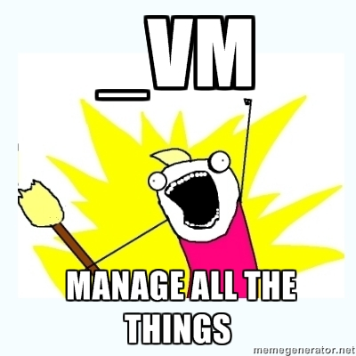

_vm, JuiCI and babashka
or how I didn't like any of the current tools for continuous integration, configuration management or version management, so I wrote my own
... with blackjack. and hookers
Things that already exist
- Jenkins / Travis
- Babushka / Marelle
- RVM / rbenv / chruby
Hi from the RVM core team!
Hi from the RVM core team!
...but while they're all great tools, they kinda suck for the problem domains most of us deal with
Which is to say that
Noone's problem domain is "be all things to all people"
The Unix Way
- Small composable tools
- The hack you knock up today should be reusable tomorrow
- (For bonus points) Largely POSIX shell
_vm
The last version manager you'll ever need
Manage things with truly honeybadgeresque indifference
#!/usr/bin/env ruby
require File.expand_path('../lib/manager', __FILE__)
class Ruby < Manager
include PosixProxy
name "ruby"
set_prefix "${_VM_PREFIX:-_}"
include Plugin::List
# Needs to be included last of the main_case plugins
include Plugin::Set
include Plugin::Ruby::Use
include Plugin::Ruby::Reset
end
_ruby = Ruby.new
_ruby.build
JuiCI
CI for people who have shit to do
- Priority is a first class citizen
- Zero Configuration
- Very little state
Build Payload
{
"project" : "UniqueIdentifier",
"environment" : {"MyKey": "MyValue", "SHA1": "deadbeef01"},
"command" : "if [ ! -d .git]; then git clone...; fi; " \
"git checkout -fq $SHA1; ./script/cibuild",
"priority" : 10,
"callbacks" ["http://google.com/juici", "http://agent99.ourcompany.com/juici"]
"title" : "Live Coding Demo"
}
Callback Payload
{
"project": "richo/juici",
"status": "success",
"url": "https://juici.herokuapp.com/builds/longwindeduuid",
"time": 8.123,
"warnings": [],
}
That "New Build" button
babashka
you paid for the whole seat, but ladies and gentlemen you'll only be needing the very edge
The thing about Babushka..
Do your deps wind up looking like this?
dep "some piece of infrastructure" do
requires "some other thing",
"everything to be working"
met? {
shell?("some test that's awkward in ruby | grep foobar")
}
meet {
shell("Some arbitrary shell magic")
}
end
What if they looked like this?
some_piece_of_infrastructure() {
requires "some_other_thing"
requires "everything_to_be_working"
is_met() {
some test that's awkward in ruby | grep foobar
}
meet() {
Some arbitrary shell magic
}
process
}
I'm on a horse
But seriously
what if they also didn't need ruby
Or actually on installing anything (but there is a neat bootstrap wrapper anyway)
I've been richo
You can contact (or abuse) me at these places:
- https://github.com/richo
- https://twitter.com/rich0H
- DevOps'ing @99designs